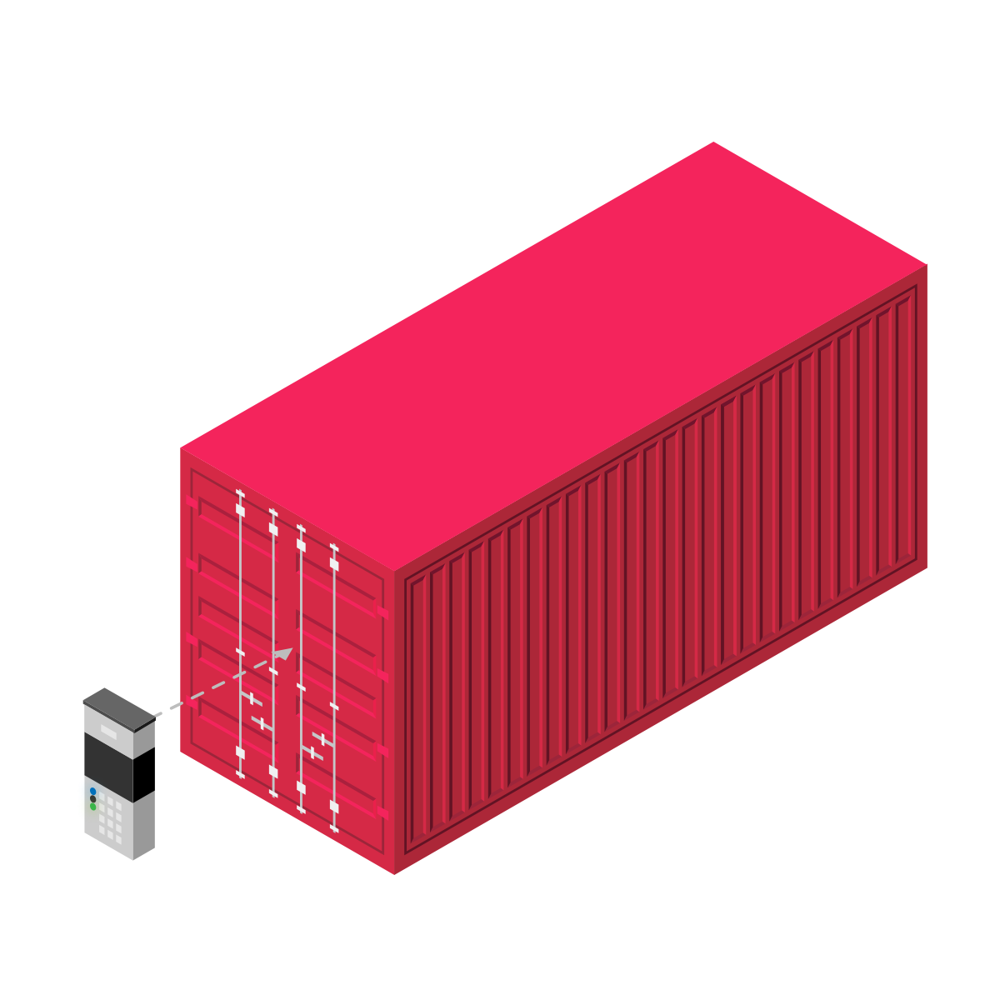
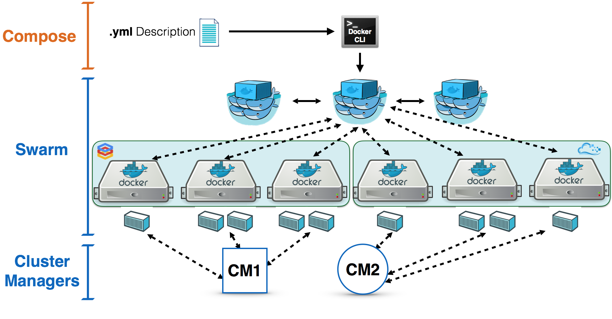
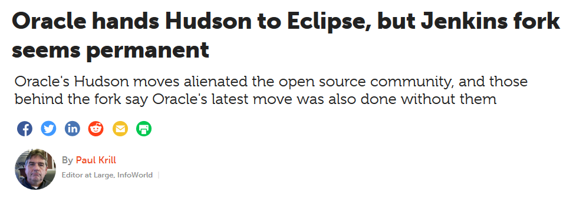

Contents
- Docker
- Jenkins
- Interconnection
Contents
- The IT Landscape is changing....
- Container Concept
- Why are we using this Concept?
- Docker
- What is Docker ?
- History of Docker
- Docker Architcture
- Example of a Docker Workflow
- Live Demo
- Docker Compose and Swarm
Change of the IT Landscape

The Container Concept

Important Terms
Layer
Part of a Image
Could be Files or Command

Image
Image of a "Container"
Consists of multiple Layers

Container
Instanced version of a Image
Many Containers can run the same Image

Dockerfile
# Use the official image as a parent image.
FROM node:current-slim
# Set the working directory.
WORKDIR /usr/src/app
# Copy the file from your host to your current location.
COPY package.json .
# Run the command inside your image filesystem.
RUN npm install
# Add metadata to the image to describe which port the container is listening on at runtime.
EXPOSE 8080
# Run the specified command within the container.
CMD [ "npm", "start" ]
# Copy the rest of your app's source code from your host to your image filesystem.
COPY . .
Registry
Service to administrate Images
Biggest One : Docker Hub

Volume
Mostly folder(s) on the Host System
Volumes are "mounted" into a Container

Network
Connection to the "outer" World could be Local or on the Internet
The Container uses the Host's Connection and Adapter
Node
VM or physical Machine, which is a member of a Network

Positive Aspects of Containers
Scalable
- Horizontal
- Vertical

So what is Docker ?

The History of Docker
Docker Architecture

Docker Workflow with DockerHub

Dockerfile Example
# Filename: Dockerfile.build
FROM node:10-alpine
WORKDIR /usr/src/app
COPY package*.json ./
RUN npm install
COPY . .
EXPOSE 3000
- Adding the Base Image
- Setting Work Directory
- Copy Files (package*.json) into the Container
- Install Dependencies ("npm install")
- Copy Content
- Port Opening
Docker Compose

- Defining and running multi-container Docker applications
- use a YAML file to configure your applications Service
- create and start all the services from your configuration
- Define your app’s environment with a Dockerfile so it can be reproduced anywhere.
- Define the services that make up your app in docker-compose.yml so they can be run together in an isolated environment.
- Run
docker-compose upand Compose starts and runs your entire app.
For Completion : Docker Swarm
Outlooks
Where can you integrate Docker into your Project ?- Database Server
- Node.js Server
- Your Webapp f.e. Angular, React
- CI/CD Pipeline : Jenkins ?
Example of Angular Express and MongoDB in Docker Compose

- Container 1 – Angular
- Container 2 – NodeJS and ExpressJS
- Container 3 – MongoDB
Container 1 – Angular
FROM node:6
RUN mkdir -p /usr/src/app
WORKDIR /usr/src/app
COPY package.json /usr/src/app
RUN npm cache clean
RUN npm install
COPY . /usr/src/app
EXPOSE 4200
CMD ["npm","start"]
Container 2 – NodeJS and ExpressJS
FROM node:6
RUN mkdir -p /usr/src/app
WORKDIR /usr/src/app
COPY package.json /usr/src/app
RUN npm cache clean
RUN npm install
COPY . /usr/src/app
EXPOSE 3000
CMD ["npm","start"]
Container 3 – MongoDB
- For the DB Part we have no need to Change the Image so we pull the Default one....
Docker Compose File
# Define the services/ containers to be run
services:
#######################
angular:
build: angular-app
ports:
- "4200:4200"
#######################
express:
build: express-server
ports:
- "3000:3000"
links:
- database
#######################
database:
image: mongo
ports:
- "27017:27017"
Jenkins

- What is Jenkins?
- A brief history of Jenkins
- What do I need a build server for?
- What do I need CI/CD for?
- How to install Jenkins
- How to integrate Jenkins with GitHub
- What is Jenkins capable of doing?
- Why do I need a build server when there is GitHub actions?
What is Jenkins?

History of Jenkins
- Released February 2005 as "Hudson"
- Renamed to Jenkins in 2011 after a dispute with Oracle
- Both projects co-existed with Oracle claiming that Jenkins was the fork
- Jenkins finally replaced Hudson in 2017

What do I need a build server for?

What do I need CI/CD for?
- "It works on my machine"
- Central build server
- Same environment for every build
How to install Jenkins
... standalone
wget -q -O - https://pkg.jenkins.io/debian-stable/jenkins.io.key | sudo apt-key add -
sudo sh -c 'echo deb https://pkg.jenkins.io/debian-stable binary/ > \
/etc/apt/sources.list.d/jenkins.list'
sudo apt-get update
sudo apt-get install jenkins
sudo systemctl start jenkins
... via Docker
docker run -p 8080:8080 -p 50000:50000 jenkins/jenkins:lts
docker run -p 8080:8080 -p 50000:50000 -v jenkins_home:/var/jenkins_home jenkins/jenkins:lts
... if that was a bit too easy for you
docker network create jenkins
docker image pull docker:dind
docker run \
--name jenkins-docker \
--privileged \
--network jenkins
--network-alias docker \
--env DOCKER_TLS_CERTDIR=/certs \
--volume jenkins-docker-certs:/certs/client \
--volume jenkins-data:/var/jenkins_home \
--publish 2376:2376 \
docker:dind
FROM jenkins/jenkins:2.249.3-slim
USER root
RUN apt-get update && apt-get install -y apt-transport-https \
ca-certificates curl gnupg2 \
software-properties-common
RUN curl -fsSL https://download.docker.com/linux/debian/gpg | apt-key add -
RUN apt-key fingerprint 0EBFCD88
RUN add-apt-repository \
"deb [arch=amd64] https://download.docker.com/linux/debian \
$(lsb_release -cs) stable"
RUN apt-get update && apt-get install -y docker-ce-cli
USER jenkins
RUN jenkins-plugin-cli --plugins blueocean:1.24.3
docker build -t my-docker-jenkins-image .
docker run my-docker-jenkins-image
... or for those who use Windows
https://www.jenkins.io/doc/book/installing/How to integrate Jenkins with GitHub

What is Jenkins capable of doing?

Why do I need a build server when there is GitHub actions?
- Self-hosted
- More customizable
How to create a project in Jenkins
How to use Jenkins in your own project
Demo of Jenkins use in our project
Interconnection
Setting up a Jenkins Instance into a Docker Container
The Master - Docker File
FROM jenkins/jenkins:latest
RUN /usr/local/bin/install-plugins.sh git matrix-auth workflow-aggregator docker-workflow blueocean credentials-binding
ENV JENKINS_USER admin
ENV JENKINS_PASS admin
ENV JAVA_OPTS -Djenkins.install.runSetupWizard=false
COPY executors.groovy /usr/share/jenkins/ref/init.groovy.d/
COPY default-user.groovy /usr/share/jenkins/ref/init.groovy.d/
VOLUME /var/jenkins_home
The Slave - Docker File
FROM ubuntu:16.04
# Install Docker CLI in the agent
RUN apt-get update && apt-get install -y apt-transport-https ca-certificates
RUN apt-key adv --keyserver hkp://p80.pool.sks-keyservers.net:80 --recv-keys 58118E89F3A912897C070ADBF76221572C52609D
RUN echo "deb [arch=amd64] https://download.docker.com/linux/ubuntu xenial stable" > /etc/apt/sources.list.d/docker.list
RUN apt-get update && apt-get install -y docker-ce --allow-unauthenticated
RUN apt-get update && apt-get install -y openjdk-8-jre curl python python-pip git
RUN easy_install jenkins-webapi
# Get docker-compose in the agent container
.
.
.
.
The Compose File
version: '3.1'
services:
jenkins:
build: jenkins-master
container_name: jenkins
ports:
- '8080:8080'
- '50000:50000'
jenkins-slave:
build: jenkins-slave
container_name: jenkins-slave
restart: always
environment:
- 'JENKINS_URL=http://jenkins:8080'
volumes:
- /var/run/docker.sock:/var/run/docker.sock # Expose the docker daemon in the container
- /home/jenkins:/home/jenkins # Avoid mysql volume mount issue
depends_on:
- jenkins
Using Docker IN Jenkins